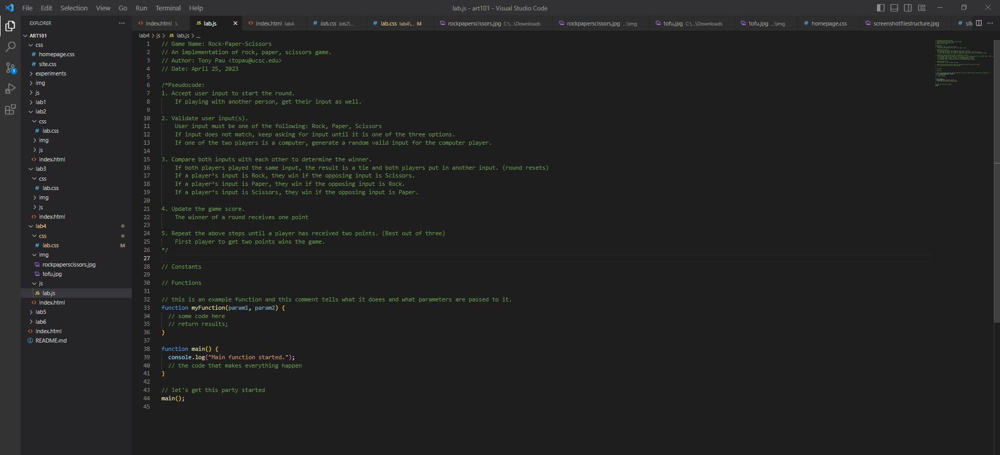

Lab 4: Pseudocoding and Problem-solving
Challenge
Create a pseudocode, list of steps, for an everyday task and a game. Then have pseudocode as comments in javascript and a list on Lab 4 index.html.
Problems
There were no issues when doing this lab.
Reflection
Both me and my partner finished in a single day and we worked together on each task which allowed us to finish this lab quickly. I think we did pretty well as we finished very fast and communicated through Discord. I also believe I personally did amazing as I spent extra time working on css to stylize the webpage more.
Results
How to make Deep Fried Tofu
1. Get ingredients:
-Firm Tofu
-Frying Oil (neutral flavor preferred)
-Corn or Potato Starch (Flour may be an alternative)
-Sauces and seasoning for flavor
-Toppings (such as cut spring onions)
2. Prepare Tofu
a. Place tofu on a clean solid surface
b. Put a heavy weighed object on tofu to press it for around 30 min (extracts moisture)
c. Cut tofu into small cubes
d. Optional: Marinate the cut dried tofu with sauces if you wish to give it more flavor
3. Fry Tofu
a. Coat in starch or flour, while also adding any seasoning you wish to add for flavor
b. Fry tofu in oil at around 360 °F to 370 °F for 3-4 min or until golden brown
4. Plate and Enjoy
a. Place tofu onto a bowl or plate to cool down
b. Optional: add sauces and toppings to give more flavor
c. Enjoy
This image is of the list pseudocode for rock-paper-scissors we had to put as comments in the lab.js javascript file for task 3.

How to play Rock-Paper-Scissors
1. Accept user input to start the round.
a. If playing with another person, get their input as well.
2. Validate user input(s).
a. User input must be one of the following: Rock, Paper, Scissors
b. If input does not match, keep asking for input until it is one of the three options.
c. If one of the two players is a computer, generate a random valid input for the computer player.
3. Compare both inputs with each other to determine the winner.
a. If both players played the same input, the result is a tie and both players put in another input. (round resets)
b. If a player's input is Rock, they win if the opposing input is Scissors.
c. If a player's input is Paper, they win if the opposing input is Rock.
d. If a player's input is Scissors, they win if the opposing input is Paper.
4. Update the game score.
a. The winner of a round receives one point
5. Repeat the above steps until a player has received two points. (Best out of three)
a. First player to get two points wins the game.